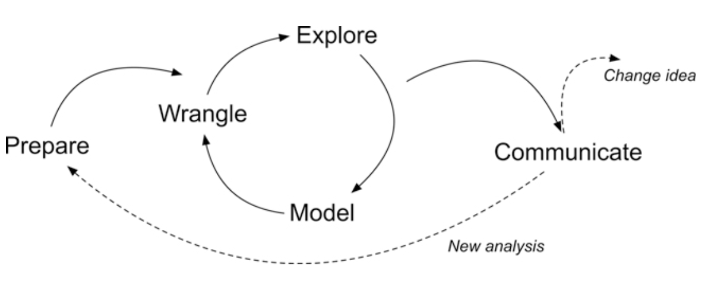
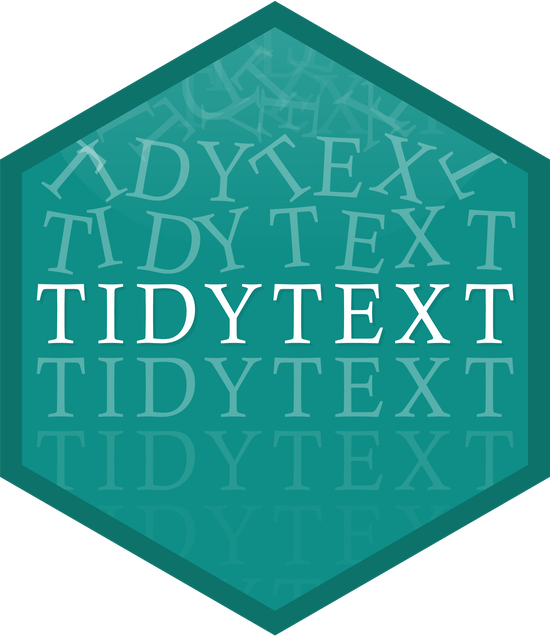
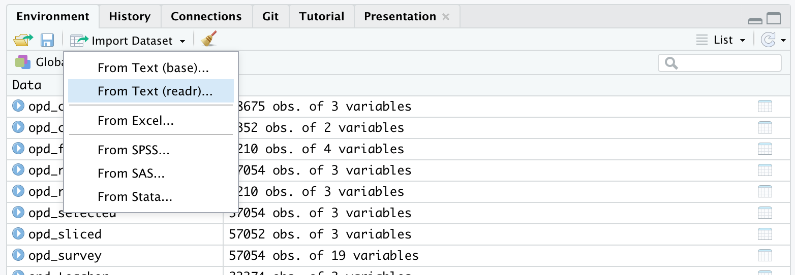
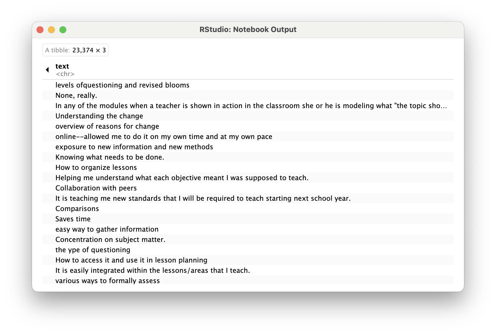
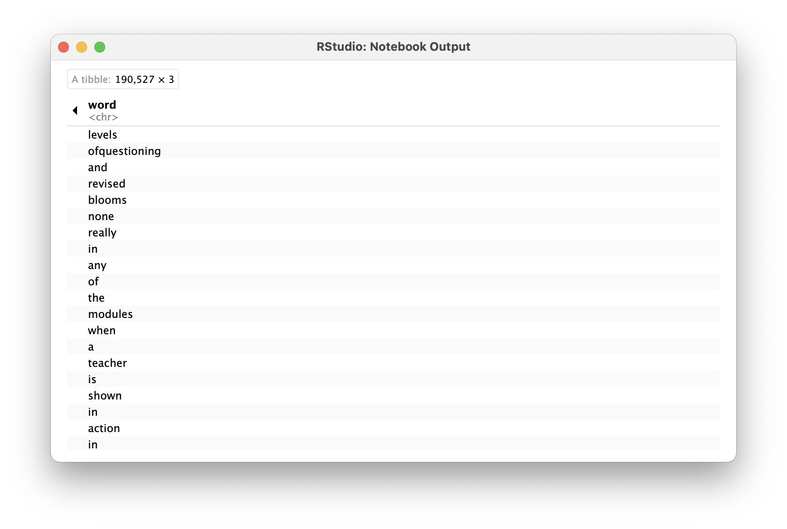
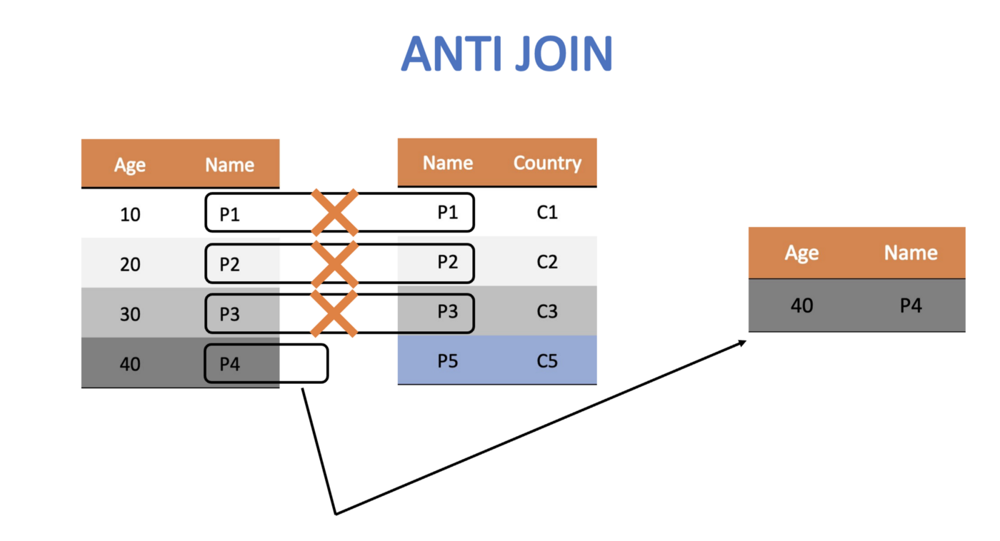

Prepare and Wrangle
Text Mining Module 1: A Code-a-long
Welcome to the LAW Code-a-long for Module 1
The Text Mining course is designed for those seeking an introductory understanding of quantifying the text in documents to better understand their properties
The following code-a-long is a companion to the Module 1 case study’s Prepare and Wrangle stages

Figure 2.2 Steps of Data-Intensive Research Workflow
[@krumm2018]
Module Objectives
This code-a-long is about getting our text “tidy.” By the end of this module we will:
- Understand the context and data sources you’re working with so you can formulate useful and answerable questions
- Practice reading, manipulating, cleaning, transforming, and merging text data
Context of the Problem
We are working with open-ended survey data from an evaluation of online professional development offered by the North Carolina Department of Public Instruction
This PD is part of the state’s Race to the Top (RttT) efforts
2012 Friday Institute Annual Report
Research Questions:
What aspects of online professional development offerings do teachers find most valuable?
How might resources differ in the value they afford teachers?
Load Libraries


- Load the
tidyverseandtidytextpackages usinglibrary()
Wrangling Text Data
- Data wrangling is essential because it involves the initial steps of going from raw data to a dataset that can be explored and modeled [@krumm2018]. Text mining is no exception. Today we will:
- Read raw data. Before working with data, we need to “read” it into R. It also helps to inspect your data and we’ll review different functions for doing so
- Reduce the data. We focus on tools from the
dplyrpackage toview,rename,select,slice, andfilterour data in preparation for analysis - Tidy text. We’ll learn how to use the
tidytextpackage to both “tidy” and tokenize our text in order to create a data frame to use for analysis
Reading Data
This section introduces the following functions for reading data into R and inspecting the contents of a data frame:
dplyr::read_csv()Reading .csv files into R.base::print()View your data frame in the Console Paneutils::view()View your data frame in the Source Panetibble::glimpse()Like print, but transposed so you can see all columnsutils::head()View the first 6 rows of your data.utils::tail()View last 6 rows of your data.dplyr::write_csv()writing .csv files to directory.
Reading Data, Cont.
To get started, we need to import, or “read”, our data into R
The RttT Online PD survey data is stored in a CSV file named opd_survey.csv which is located in the data folder of this project
Use
read_csv()to saveopd_survey.csvas a new objectopd_surveyThis file can be found in the local data folder
If you have questions about the above function, don’t be afraid to look it up in console using
?read_csv()
- There is also an Import Dataset feature under the Environment tab in the upper right pane of RStudio

Viewing Data
- Once your data is in R, there are many different ways you can view it. Use the below code chunk to try each way out:
# A tibble: 57,054 × 19
RecordedDate ResponseId Role Q14 Q16...5 Resource Resource_8_TEXT
<chr> <chr> <chr> <chr> <chr> <chr> <chr>
1 "Recorded Date" "Response… "Wha… "Ple… "Which… "Please… "Please indica…
2 "{\"ImportId\":\"rec… "{\"Impor… "{\"… "{\"… "{\"Im… "{\"Imp… "{\"ImportId\"…
3 "3/14/12 12:41" "R_6fKCyE… "Cen… "K-1… "Eleme… "Summer… <NA>
4 "3/14/12 13:31" "R_09rHle… "Cen… "Ele… "Eleme… "Online… <NA>
5 "3/14/12 14:51" "R_1BlKt2… "Sch… "Hig… "Not A… "Online… <NA>
6 "3/14/12 15:02" "R_bPGUVT… "Sch… "Ele… "Guida… "Calend… <NA>
7 "3/14/12 17:24" "R_egJEHM… "Tea… "Ele… "Engli… "Live W… <NA>
8 "3/15/12 9:18" "R_4PEbT4… "Tea… "Ele… "Infor… "Online… <NA>
9 "3/15/12 10:54" "R_eqB1bM… "Sch… "Mid… "Guida… "Live W… <NA>
10 "3/15/12 14:20" "R_ewwUwi… "Cen… "Pre… "Other… "Wiki" <NA>
# ℹ 57,044 more rows
# ℹ 12 more variables: Resource_9_TEXT <chr>, Resource_10_TEXT...9 <chr>,
# Topic <chr>, Resource_10_TEXT...11 <chr>, Q16...12 <chr>, Q16_9_TEXT <chr>,
# Q19 <chr>, Q20 <chr>, Q21 <chr>, Q26 <chr>, Q37 <chr>, Q8 <chr>Rows: 57,054
Columns: 19
$ RecordedDate <chr> "Recorded Date", "{\"ImportId\":\"recordedDate\"…
$ ResponseId <chr> "Response ID", "{\"ImportId\":\"_recordId\"}", "…
$ Role <chr> "What is your role within your school district o…
$ Q14 <chr> "Please select the school level(s) you work with…
$ Q16...5 <chr> "Which content area(s) do you specialize in? (S…
$ Resource <chr> "Please indicate the online professional develop…
$ Resource_8_TEXT <chr> "Please indicate the online professional develop…
$ Resource_9_TEXT <chr> "Please indicate the online professional develop…
$ Resource_10_TEXT...9 <chr> "Please indicate the online professional develop…
$ Topic <chr> "What was the primary focus of the webinar you a…
$ Resource_10_TEXT...11 <chr> "What was the primary focus of the webinar you a…
$ Q16...12 <chr> "Which primary content area(s) did the webinar a…
$ Q16_9_TEXT <chr> "Which primary content area(s) did the webinar a…
$ Q19 <chr> "Please specify the online learning module you a…
$ Q20 <chr> "How are you using this resource?", "{\"ImportId…
$ Q21 <chr> "What was the most beneficial/valuable aspect of…
$ Q26 <chr> "What recommendations do you have for improving …
$ Q37 <chr> "What recommendations do you have for making thi…
$ Q8 <chr> "Which of the following best describe(s) how you…# A tibble: 6 × 19
RecordedDate ResponseId Role Q14 Q16...5 Resource Resource_8_TEXT
<chr> <chr> <chr> <chr> <chr> <chr> <chr>
1 "Recorded Date" "Response… "Wha… "Ple… "Which… "Please… "Please indica…
2 "{\"ImportId\":\"reco… "{\"Impor… "{\"… "{\"… "{\"Im… "{\"Imp… "{\"ImportId\"…
3 "3/14/12 12:41" "R_6fKCyE… "Cen… "K-1… "Eleme… "Summer… <NA>
4 "3/14/12 13:31" "R_09rHle… "Cen… "Ele… "Eleme… "Online… <NA>
5 "3/14/12 14:51" "R_1BlKt2… "Sch… "Hig… "Not A… "Online… <NA>
6 "3/14/12 15:02" "R_bPGUVT… "Sch… "Ele… "Guida… "Calend… <NA>
# ℹ 12 more variables: Resource_9_TEXT <chr>, Resource_10_TEXT...9 <chr>,
# Topic <chr>, Resource_10_TEXT...11 <chr>, Q16...12 <chr>, Q16_9_TEXT <chr>,
# Q19 <chr>, Q20 <chr>, Q21 <chr>, Q26 <chr>, Q37 <chr>, Q8 <chr># A tibble: 6 × 19
RecordedDate ResponseId Role Q14 Q16...5 Resource Resource_8_TEXT
<chr> <chr> <chr> <chr> <chr> <chr> <chr>
1 7/2/13 10:20 R_0cggNPIobej2kHX Teacher Middl… World … Online … <NA>
2 7/2/13 12:32 R_bpZ2jPQV1BOta2p <NA> <NA> <NA> <NA> <NA>
3 7/2/13 12:32 R_4SbNuxFI6qv8pQF Teacher Eleme… Mathem… Online … <NA>
4 7/2/13 12:32 R_1TT9rRNolK2xSDP <NA> <NA> <NA> <NA> <NA>
5 7/2/13 12:32 R_8raUHcIydALnRhH <NA> <NA> <NA> <NA> <NA>
6 7/2/13 12:32 R_2bs3lzLBdGWjkOx <NA> <NA> <NA> <NA> <NA>
# ℹ 12 more variables: Resource_9_TEXT <chr>, Resource_10_TEXT...9 <chr>,
# Topic <chr>, Resource_10_TEXT...11 <chr>, Q16...12 <chr>, Q16_9_TEXT <chr>,
# Q19 <chr>, Q20 <chr>, Q21 <chr>, Q26 <chr>, Q37 <chr>, Q8 <chr> [1] "RecordedDate" "ResponseId" "Role"
[4] "Q14" "Q16...5" "Resource"
[7] "Resource_8_TEXT" "Resource_9_TEXT" "Resource_10_TEXT...9"
[10] "Topic" "Resource_10_TEXT...11" "Q16...12"
[13] "Q16_9_TEXT" "Q19" "Q20"
[16] "Q21" "Q26" "Q37"
[19] "Q8" Reducing Data
As you’ve probably already noticed from viewing our dataset, we clearly have more data than we need to answer our rather basic research question. For this part of our workflow we focus on the following functions from the tidyverse dplyr and tidyr packages for wrangling our data:
dplyr functions
select()picks variables based on their names.slice()lets you select, remove, and duplicate rows.rename()changes the names of individual variables using new_name = old_name syntaxfilter()picks cases, or rows, based on their values in a specified column.
tidyr functions
drop_na()removes rows with missing values, i.e. NA
Subset Columns
- To help address our research question, let’s first reduce our dataset to only the columns needed
To begin, we’ll select() the columns Role, Resource, and Q21 since those respectively pertain to educator role, OPD resource they are evaluating, and, as illustrated by the second row of column Q21, their response to the survey question, “What was the most beneficial/ aspect of the professional development resource?”
We’ll also assign these selected columns to a new data frame named opd_selected by using the <- assignment operator.
Run the following code:
👉 Your Turn ⤵
Suppose we were interested instead in analyzing how educators are are using the online resources instead of the most beneficial aspects.
Change the code below to select the correct columns and then run the code:
Notice that, like the bulk of tidyverse functions we’ll be using throughout our case studies, the first argument that the select() function expects is a data frame, which in our case is opd_survey. The select() function the expects the specific columns you’d like to select.
Another common approach to providing tidyverse functions a data frame is to use the |> pipe operator from the {maggitr] package, which is used to “pipe” inputs and outputs from one function to another. This operator is used so frequently in R, that it has now built into R with the new |> pipe operator.
Run the following code to select the columns Role, Resource, and Q21 columns and assign these columns to a new data frame named opd_selected:
This code produces the same result as the previous code, but is a common way in R of providing data to a function.
👉 Your Turn ⤵
Use one of the data viewing functions that we introduced above to take a look at our newly created data frame:
# A tibble: 6 × 3
Role Resource Q21
<chr> <chr> <chr>
1 "What is your role within your school district or organization… "Please… "Wha…
2 "{\"ImportId\":\"QID2\"}" "{\"Imp… "{\"…
3 "Central Office Staff (e.g. Superintendents, Tech Director, Cu… "Summer… <NA>
4 "Central Office Staff (e.g. Superintendents, Tech Director, Cu… "Online… "Glo…
5 "School Support Staff (e.g. Counselors, Technology Facilitator… "Online… <NA>
6 "School Support Staff (e.g. Counselors, Technology Facilitator… "Calend… "com…Great job! You probably notice that the data frame now has dramatically fewer variables.
Rename Columns
Notice that Q21 is not a terribly informative variable name. Let’s now take our opd_selected data frame and use the rename() function along with the = assignment operator introduced last week to change the name from Q21 to text and save it as opd_renamed.
This naming is somewhat intentional because not only is it the text we are interested in analyzing, but also mirrors the naming conventions in our Text Mining with R [@silge2017text] course book and will make it easier to follow the examples there.
Run the following code to rename the column and print the updated data frame:
# A tibble: 57,054 × 3
Role Resource text
<chr> <chr> <chr>
1 "What is your role within your school district or organizatio… "Please… "Wha…
2 "{\"ImportId\":\"QID2\"}" "{\"Imp… "{\"…
3 "Central Office Staff (e.g. Superintendents, Tech Director, C… "Summer… <NA>
4 "Central Office Staff (e.g. Superintendents, Tech Director, C… "Online… "Glo…
5 "School Support Staff (e.g. Counselors, Technology Facilitato… "Online… <NA>
6 "School Support Staff (e.g. Counselors, Technology Facilitato… "Calend… "com…
7 "Teacher" "Live W… "lev…
8 "Teacher" "Online… "Non…
9 "School Support Staff (e.g. Counselors, Technology Facilitato… "Live W… "awa…
10 "Central Office Staff (e.g. Superintendents, Tech Director, C… "Wiki" "Inf…
# ℹ 57,044 more rowsSubset Rows
Now let’s deal with the legacy rows that Qualtrics outputs by default, which are effectively 3 sets of headers. We will use the slice() function, which is basically the same as the select() function but for rows instead of columns, to carve out those two rows.
# A tibble: 57,052 × 3
Role Resource text
<chr> <chr> <chr>
1 Central Office Staff (e.g. Superintendents, Tech Director, Cu… Summer … <NA>
2 Central Office Staff (e.g. Superintendents, Tech Director, Cu… Online … "Glo…
3 School Support Staff (e.g. Counselors, Technology Facilitator… Online … <NA>
4 School Support Staff (e.g. Counselors, Technology Facilitator… Calendar "com…
5 Teacher Live We… "lev…
6 Teacher Online … "Non…
7 School Support Staff (e.g. Counselors, Technology Facilitator… Live We… "awa…
8 Central Office Staff (e.g. Superintendents, Tech Director, Cu… Wiki "Inf…
9 Central Office Staff (e.g. Superintendents, Tech Director, Cu… Online … "Gav…
10 Teacher Online … "In …
# ℹ 57,042 more rowsNow let’s take our opd_sliced and remove any rows that are missing data, as indicated by an NA, by using the drop_na tidyverse function:
# A tibble: 27,283 × 3
Role Resource text
<chr> <chr> <chr>
1 Central Office Staff (e.g. Superintendents, Tech Director, Cu… Online … "Glo…
2 School Support Staff (e.g. Counselors, Technology Facilitator… Calendar "com…
3 Teacher Live We… "lev…
4 Teacher Online … "Non…
5 School Support Staff (e.g. Counselors, Technology Facilitator… Live We… "awa…
6 Central Office Staff (e.g. Superintendents, Tech Director, Cu… Wiki "Inf…
7 Central Office Staff (e.g. Superintendents, Tech Director, Cu… Online … "Gav…
8 Teacher Online … "In …
9 Teacher Online … "Und…
10 Teacher Online … "ove…
# ℹ 27,273 more rowsFinally, since we are only interested in the feedback from teachers, let’s also filter our dataset for only participants who indicated their Role as “Teacher”.
# A tibble: 23,374 × 3
Role Resource text
<chr> <chr> <chr>
1 Teacher Live Webinar "levels ofquestioning and revise…
2 Teacher Online Learning Module "None, really."
3 Teacher Online Learning Module "In any of the modules when a te…
4 Teacher Online Learning Module "Understanding the change"
5 Teacher Online Learning Module "overview of reasons for change"
6 Teacher Online Learning Module "online--allowed me to do it on …
7 Teacher Summer Institute/RESA Presentations "exposure to new information and…
8 Teacher Summer Institute/RESA Presentations "Knowing what needs to be done."
9 Teacher Other, please specify "How to organize lessons"
10 Teacher Document, please specify "Helping me understand what each…
# ℹ 23,364 more rowsNote
When we used two == signs to filter for rows when Role is equal to Teacher. This was different than when we used just on = sign to rename our column.
In R, the single = sign is used for creating new variables, object or value, while the double == sign is used to test if two values are equal.
The single = can also be used used for assigning the output of a function to a new objects, like so:
opd_complete = drop_na(opd_sliced)
However, using and == for comparisons and the <- operator for assignment avoids ambiguity and makes the code easier to read and maintain.
👉 Your Turn ⤵
Suppose we were interested instead in analyzing School Executive responses instead of teachers.
Change the code below to filter the correct rows and then run the code:
# A tibble: 23,374 × 3
Role Resource text
<chr> <chr> <chr>
1 Teacher Live Webinar "levels ofquestioning and revise…
2 Teacher Online Learning Module "None, really."
3 Teacher Online Learning Module "In any of the modules when a te…
4 Teacher Online Learning Module "Understanding the change"
5 Teacher Online Learning Module "overview of reasons for change"
6 Teacher Online Learning Module "online--allowed me to do it on …
7 Teacher Summer Institute/RESA Presentations "exposure to new information and…
8 Teacher Summer Institute/RESA Presentations "Knowing what needs to be done."
9 Teacher Other, please specify "How to organize lessons"
10 Teacher Document, please specify "Helping me understand what each…
# ℹ 23,364 more rowsCode Reduction
Fortunately, we can use the Pipe Operator |> introduced in Chapter 6 of Data Science in Education Using R (DSIEUR) to dramatically simplify these cleaning steps and reduce the amount of code written:
# A tibble: 23,374 × 3
Role Resource text
<chr> <chr> <chr>
1 Teacher Live Webinar "levels ofquestioning and revise…
2 Teacher Online Learning Module "None, really."
3 Teacher Online Learning Module "In any of the modules when a te…
4 Teacher Online Learning Module "Understanding the change"
5 Teacher Online Learning Module "overview of reasons for change"
6 Teacher Online Learning Module "online--allowed me to do it on …
7 Teacher Summer Institute/RESA Presentations "exposure to new information and…
8 Teacher Summer Institute/RESA Presentations "Knowing what needs to be done."
9 Teacher Other, please specify "How to organize lessons"
10 Teacher Document, please specify "Helping me understand what each…
# ℹ 23,364 more rows👉 Your Turn ⤵
Use the code chunk below to rewrite the piped code above for an additional analysis. The data frame should includes all Roles, not just teachers, but excludes the Resource column. Assign it to opd_benefits using the <- operator for later use.
# A tibble: 27,283 × 2
Role text
<chr> <chr>
1 Central Office Staff (e.g. Superintendents, Tech Director, Curriculum … "Glo…
2 School Support Staff (e.g. Counselors, Technology Facilitator, Testing… "com…
3 Teacher "lev…
4 Teacher "Non…
5 School Support Staff (e.g. Counselors, Technology Facilitator, Testing… "awa…
6 Central Office Staff (e.g. Superintendents, Tech Director, Curriculum … "Inf…
7 Central Office Staff (e.g. Superintendents, Tech Director, Curriculum … "Gav…
8 Teacher "In …
9 Teacher "Und…
10 Teacher "ove…
# ℹ 27,273 more rowsWell done! Our text is now ready to be tidied!!!
Tidying Text
For this part of our workflow we focus on the following functions from the tidytext and dplyr packages respectively:
unnest_tokens()splits a column into tokensanti_join()returns all rows from x without a match in y.
Tidy Data Principles
Not surprisingly, the Tidyverse set of packages including packages like dplyr adhere “tidy” data principles [@wickham2023r]. Tidy data has a specific structure:
- Each variable is a column
- Each observation is a row
- Each type of observational unit is a table
Text data, by it’s very nature is ESPECIALLY untidy. In Chapter 1 of Text Mining with R, Silge and Robinson define the tidy text format as:
a table with one-token-per-row. A token is a meaningful unit of text, such as a word, that we are interested in using for analysis, and tokenization is the process of splitting text into tokens.
Our Tidy Text Goal
In this section, our goal is to transform our opd_teacher text data from this:

to this:

This one-token-per-row structure differs from how text is often stored, perhaps as strings or in a document-term matrix. The token that is stored in each row is most often a single word, but can also be an n-gram (e.g., a sequence of 2 or 3 words), a sentence, or even a whole paragraph. Conveniently, the tidytext package, provides functionality for tokenizing text by common units like these into a one-term-per-row format.
Tokenize Text
In order to tidy our text, we need to break the text into individual tokens (a process called tokenization) and transform it to a tidy data structure. To do this, we use tidytext’s incredibly powerful unnest_tokens() function.
After all the work we did prepping our data, this is going to feel a little anticlimactic.
Run the following code to tidy our text and save it as a new data frame named opd_tidy:
# A tibble: 190,527 × 3
Role Resource word
<chr> <chr> <chr>
1 Teacher Live Webinar levels
2 Teacher Live Webinar ofquestioning
3 Teacher Live Webinar and
4 Teacher Live Webinar revised
5 Teacher Live Webinar blooms
6 Teacher Online Learning Module none
7 Teacher Online Learning Module really
8 Teacher Online Learning Module in
9 Teacher Online Learning Module any
10 Teacher Online Learning Module of
# ℹ 190,517 more rowsNote that we also could have just added unnest_tokens(word, text) to our previous piped chain of functions like so:
# A tibble: 190,527 × 3
Role Resource word
<chr> <chr> <chr>
1 Teacher Live Webinar levels
2 Teacher Live Webinar ofquestioning
3 Teacher Live Webinar and
4 Teacher Live Webinar revised
5 Teacher Live Webinar blooms
6 Teacher Online Learning Module none
7 Teacher Online Learning Module really
8 Teacher Online Learning Module in
9 Teacher Online Learning Module any
10 Teacher Online Learning Module of
# ℹ 190,517 more rowsThere is A LOT to unpack with this function. First notice that unnest_tokens expects a data frame as the first argument, followed by two column names. The first is an output column name that doesn’t currently exist (word, in this case) but will be created as the text is unnested into the new column. This if followed by the input column that the text comes from which we uncreatively named text. Also notice:
- Other columns, such as
RoleandResource, are retained. - All punctuation has been removed.
- Tokens have been changed to lowercase, which makes them easier to compare or combine with other datasets. However, we can use the
to_lower = FALSEargument to turn off this behavior if desired.
Remove Stop Words
One final step in tidying our text is to remove words that don’t add much value to our analysis (at least when using this approach) such as “and”, “the”, “of”, “to” etc. The tidytext package contains a stop_words dataset derived from three different lexicons that we’ll use to remove rows that match words in this dataset.
Let’s take a look at the first 20 stop words so we know what we’re getting rid of from our opd_tidy dataset.
# A tibble: 20 × 2
word lexicon
<chr> <chr>
1 a SMART
2 a's SMART
3 able SMART
4 about SMART
5 above SMART
6 according SMART
7 accordingly SMART
8 across SMART
9 actually SMART
10 after SMART
11 afterwards SMART
12 again SMART
13 against SMART
14 ain't SMART
15 all SMART
16 allow SMART
17 allows SMART
18 almost SMART
19 alone SMART
20 along SMART Now run the following code to view all stop words in each lexicon:
In order to remove these stop words, we will use function called anti_join() that looks for matching values in a specific column from two datasets and returns rows from the original dataset that have no matches. For a good overview of the different dplyr joins see here: https://medium.com/the-codehub/beginners-guide-to-using-joins-in-r-682fc9b1f119

Let’s remove rows from our opd_tidy data frame that contain matches in the word column with those in the stop_words dataset and save it as opd_clean since we were done cleaning our data at this point.
# A tibble: 78,675 × 3
Role Resource word
<chr> <chr> <chr>
1 Teacher Live Webinar levels
2 Teacher Live Webinar ofquestioning
3 Teacher Live Webinar revised
4 Teacher Live Webinar blooms
5 Teacher Online Learning Module modules
6 Teacher Online Learning Module teacher
7 Teacher Online Learning Module shown
8 Teacher Online Learning Module action
9 Teacher Online Learning Module classroom
10 Teacher Online Learning Module modeling
# ℹ 78,665 more rows👉 Your Turn ⤵
In the code chunk below, add the anti_join() function to our chain of data wrangling functions as our final text preprocessing step. Don’t forget to include in the function the stop words you are trying to remove.
Also, add a short comment to each line of code explaining each data wrangling step. The first had been done for you.
# A tibble: 78,675 × 3
Role Resource word
<chr> <chr> <chr>
1 Teacher Live Webinar levels
2 Teacher Live Webinar ofquestioning
3 Teacher Live Webinar revised
4 Teacher Live Webinar blooms
5 Teacher Online Learning Module modules
6 Teacher Online Learning Module teacher
7 Teacher Online Learning Module shown
8 Teacher Online Learning Module action
9 Teacher Online Learning Module classroom
10 Teacher Online Learning Module modeling
# ℹ 78,665 more rowsIf you did this correctly, you should now see a wrangled_teacher data frame in the Environment pane that has 78,675 observations and 3 variables.
👉 Your Turn ⤵
Finally, let’s wrangle a data set that includes tokens not just for teachers, but for all educators who particiated in the online professional development offerings.
Complete and run the following code to wrangle and tidy your opd_survey data for all survey respondents.
# A tibble: 92,722 × 3
Role Resource word
<chr> <chr> <chr>
1 Central Office Staff (e.g. Superintendents, Tech Director, Cu… Online … glob…
2 Central Office Staff (e.g. Superintendents, Tech Director, Cu… Online … view
3 School Support Staff (e.g. Counselors, Technology Facilitator… Calendar comm…
4 Teacher Live We… leve…
5 Teacher Live We… ofqu…
6 Teacher Live We… revi…
7 Teacher Live We… bloo…
8 School Support Staff (e.g. Counselors, Technology Facilitator… Live We… awar…
9 Central Office Staff (e.g. Superintendents, Tech Director, Cu… Wiki info…
10 Central Office Staff (e.g. Superintendents, Tech Director, Cu… Wiki rele…
# ℹ 92,712 more rows❓Questions
- How many observations are in the data frame with all educators?
- YOUR RESPONSE HERE
- Why do you think the console provided the message “Joining, by = ‘word’”?
- YOUR RESPONSE HERE
Congratulations, we’re now ready to begin exploring our wrangled data!
What’s Next?
- Explore the R Basics column of Posit Cloud’s Recipes
- Complete the Prepare and Wrangle part of the case study
- Complete the Foundations of Learning Analytics badge
- Do essential readings for the next module